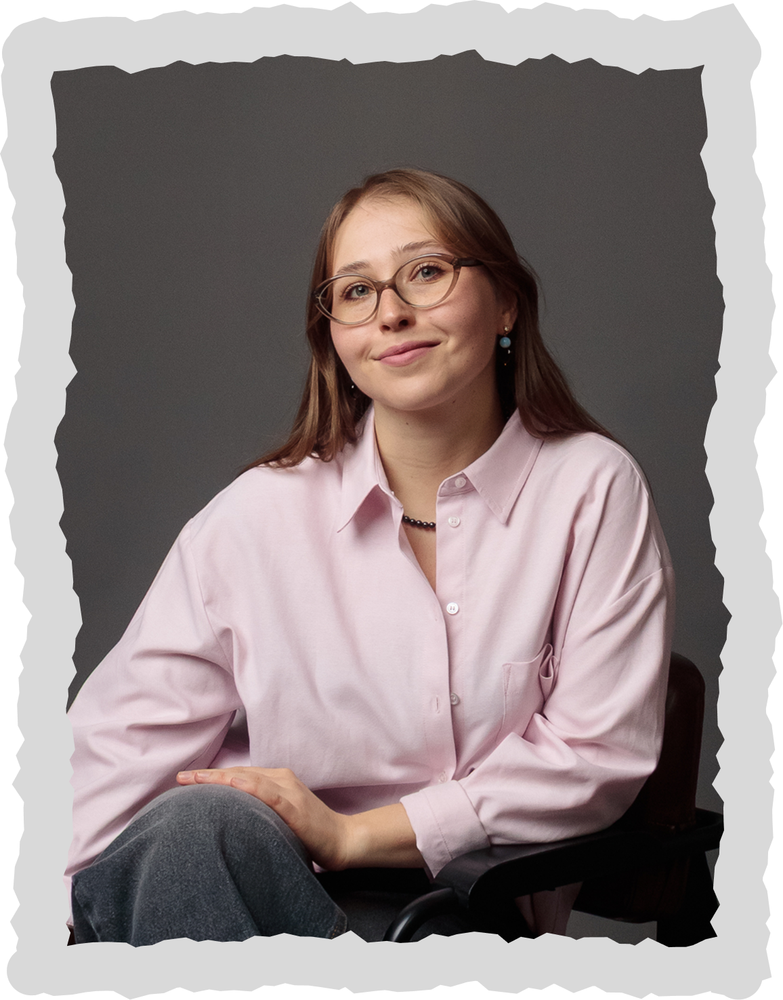

психолог-консультант,
CFT-терапевт и просто человек,
готовый быть рядом

это научно обоснованный, современный вид психотерапии, выросший из когнитивно-поведенческой терапии. он помогает работать с трудными эмоциями, снижать самокритику и формировать внутреннюю опору
Прокрастинация
Этот список — лишь ориентир. Напишите мне своими словами, и я скажу, работаю ли с этим